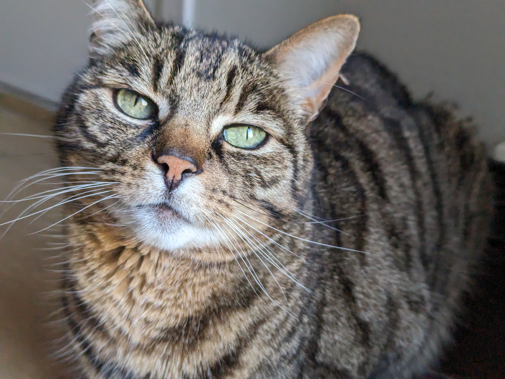

Hei! Mitt navn er Birk og jeg er en 22-år-gammel mann fra Tromsø. Personlighetsmessig er jeg en veldig sjenert introvert, men er også veldig glad i folk. Er generelt en ganske rolig og ufordømmende person... ved mindre jeg spiller cs. Da lærer jeg folk litt nordnorske banneord 😇
Er veldig interessert i datamaskiner (spesielt hvordan de fungerer), psykologi og folk generelt! I fritida pleier jeg som regel å spille med venner, men en sjelden gang går jeg tur eller driver med kunst. Liker også å lage mat!
Denne nettsiden er work-in-progress og blir å forandre utseende flere ganger. Jeg er også ute etter å peke bork.no til server pcen min i framtida for bl.a. Minecraft server. Da kommer jeg enten til å hoste denne siden selv (atm gjennom Github Pages) eller flytte den til et subdomene som f.eks. www.bork.no.
Self-hosting er mer fristende men mer arbeid, må sette opp
reverse proxy hvis jeg tar den måten siden bork.no da peker til nettside, minecraft server, epost server og streaming service samtidig. Må basically filtre alle requests til bork.no så man kommer til riktig service hver gang, ez haha (ikke ez ;-;)
Koden til denne siden er blitt inspisert av Mare:
Her er CVen min (utdatert)